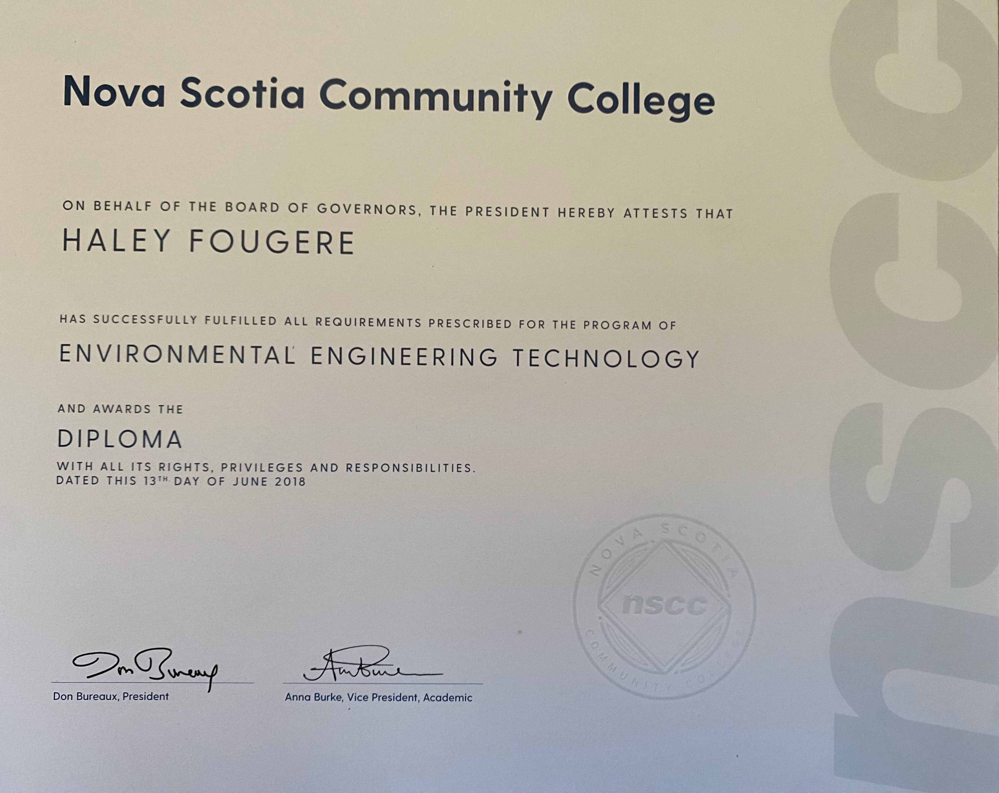

About Me
Hello! I’m Haley Fougere, a passionate IT Programming student at Nova Scotia Community College, poised to graduate in April 2024. My journey into the world of technology is fueled by a unique blend of experiences, including a foundational education in Environmental Biology from the University of Prince Edward Island. This diverse academic background has endowed me with a unique perspective on the role of technology in solving complex problems, particularly within the realm of ocean tech, where I believe innovative solutions can make a significant impact. One of my biggest accomplishments of my IT Programming Diploma was being the Technology Team Lead for the IT Job Fair Organizing committee. It was a great experience to work on a live website and be able to adapt and handle issues as they came up.
Personal Interests
I enjoy hiking and walking my two German Shepherds, Zeus and Shiloh, on the trails. I love to read in my spare time, mostly fantasy and science fiction. I love being active and have ran three half-marathons in the last 2 years and continue to train.

Education
- University of Prince Edward Island - Bachelor of Science (2015)
- NSCC - Environmental Engineering Technology (2018)
- NSCC - IT Programming (2024)
Skills
- Proficiency in the .NET framework, including ASP.NET MVC and .NET Core, to develop scalable, secure, and efficient web applications.
- Experience in frameworks such as .NET, to create responsive and user-friendly interfaces.
- Proficient in using Github for version control, ensuring efficient collaboration and code management in team projects.
Environmental Engineering Diploma from NSCC
IT Job Fair Certificate